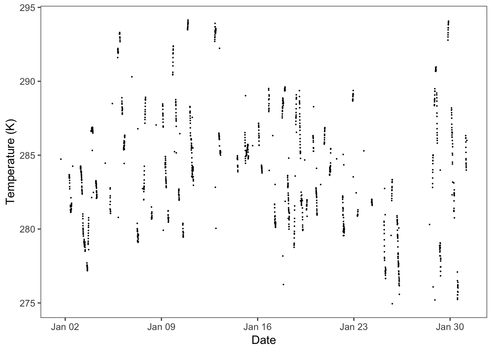
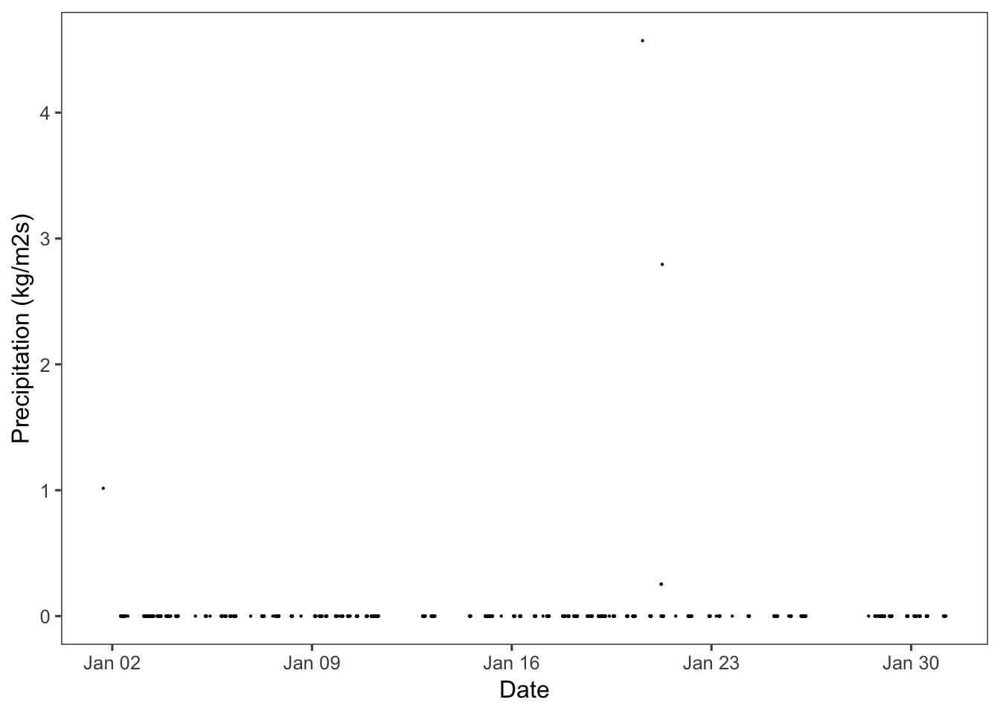

8 Objective: To be able to demonstrate how to get TERRA REF meteorological data
This vignette shows how to read weather data for the month of January 2017 from the weather station at the University of Arizona’s Maricopa Agricultural Center into R. These data are stored online on the data management system Clowder, which is accessed using an API. Data across time for two of the weather variables, temperature and precipitation, are plotted in R. Lastly, how to get the list of all possible weather variables is demonstrated.
8.0.1 Using the API to get data
In order to access the data, we need to contruct a URL that links to where the data is located on Clowder. The data is then pulled down using the API, which “receives requests and sends responses” , for Clowder.
8.0.2 The structure of the database
The meteorological data that is collected for the TERRA REF project is contained in multiple related tables, also know as a relational database. The first table contains data about the sensor that is collecting data. This is then linked to a stream table, which contains information about a datastream from the sensor. Sensors can have multiple datastreams. The actual weather data is in the third table, the datapoint table. A visual representation of this structure is shown below.

In this vignette, we will be using data from a weather station at the Maricopa Agricultural Center, with datapoints for the month of January 2017 from a certain sensor. These data are five minute summaries aggregated from observations taken every second.
8.0.3 Creating the URLs for all data table types
All URLs have the same beginning (https://terraref.ncsa.illinois.edu/clowder/api/geostreams), then additional information is added for each type of data table as shown below.
- Station: /sensors/sensor_name=[name]
- Sensor: /sensors/[sensor number]/streams
- Datapoints: /datapoints?stream_id=[datapoints number]&since=[start date]&until=[end date]
A certain time period can be specified for the datapoints.
For example, below are the URLs for the particular data being used in this vignette. These can be pasted into a browser to see how the data is stored as text using JSON.
- Station: https://terraref.ncsa.illinois.edu/clowder/api/geostreams/sensors?sensor_name=UA-MAC+AZMET+Weather+Station
- Sensor: https://terraref.ncsa.illinois.edu/clowder/api/geostreams/sensors/438/streams
- Datapoints: https://terraref.ncsa.illinois.edu/clowder/api/geostreams/datapoints?stream_id=46431&since=2017-01-02&until=2017-01-31
Possible sensor numbers for a station are found on the page for that station under “id:”, and then datapoints numbers are found on the sensor page under “stream_id:”.
8.0.4 Download data using the command line
Data can be downloaded from Clowder using the command line program Curl. If the following is typed into the commmand line, it will download the datapoints data that we’re interested in as a file which we have chosen to call spectra.json.
curl -o spectra.json -X GET https://terraref.ncsa.illinois.edu/clowder/api/geostreams/datapoints?stream_id=46431&since=2017-01-02&until=2017-01-318.0.5 Read in data using R
The same data can be accessed with the URL using the R package jsonlite. We are calling that library along with several others that will be used to clean and plot the data. The data is read in by the fromJSON function as a dataframe that also has two nested dataframes, called properties and geometries.
library(dplyr)
library(ggplot2)
library(jsonlite)
library(lubridate)
weather_all <- fromJSON('https://terraref.ncsa.illinois.edu/clowder/api/geostreams/datapoints?stream_id=46431&since=2017-01-02&until=2017-01-31', flatten = FALSE)The geometries dataframe is then pulled out from these data, which contains the datapoints from this stream. This is combined with a transformed version of the end of the time period from the stream.
weather_data <- weather_all$properties %>%
mutate(time = ymd_hms(weather_all$end_time))The temperature data, which is five minute averages for the entire month of January 2017, is used to calculate the growing degree days for each day. Growing degree days is a measurement that is used to predict when certain plant developmental phases happen. This new dataframe will be used in the last vignette to synthesize the trait, weather, and image data.
daily_values = weather_data %>%
mutate(date = as.Date(time),
air_temp_converted = air_temperature - 273.15) %>%
group_by(date) %>%
summarise(min_temp = min(air_temp_converted),
max_temp = max(air_temp_converted),
gdd = ifelse(sum(min_temp, max_temp) / 2 > 10,
(max_temp + min_temp) / 2 - 10, 0))8.0.6 Plot data using R
The five minute summary weather variables in the weather_data dataframe can be plotted across time, as shown below for temperature and precipitation.
theme_set(ggthemes::theme_few())
ggplot(data = weather_data) +
geom_point(aes(x = time, y = air_temperature), size = 0.1) +
labs(x = "Date", y = "Temperature (K)")
ggplot(data = weather_data) +
geom_point(aes(x = time, y = precipitation_rate), size = 0.1) +
labs(x = "Date", y = "Precipitation (kg/m2s)")
8.0.7 Get all available weather variables
The weather variables that are available from these datapoints data are extracted below from the column names of the dataframe that we read in earlier. Any of these variables that are of interest can be analyzed and plotted.
cols = colnames(weather_data)
cols[!cols %in% c("source", "source_file", "time")]## [1] "wind_speed"
## [2] "eastward_wind"
## [3] "northward_wind"
## [4] "air_temperature"
## [5] "relative_humidity"
## [6] "precipitation_rate"
## [7] "surface_downwelling_shortwave_flux_in_air"
## [8] "surface_downwelling_photosynthetic_photon_flux_in_air"You should now be able to find, get, and use weather data from the TERRA REF project via Clowder.